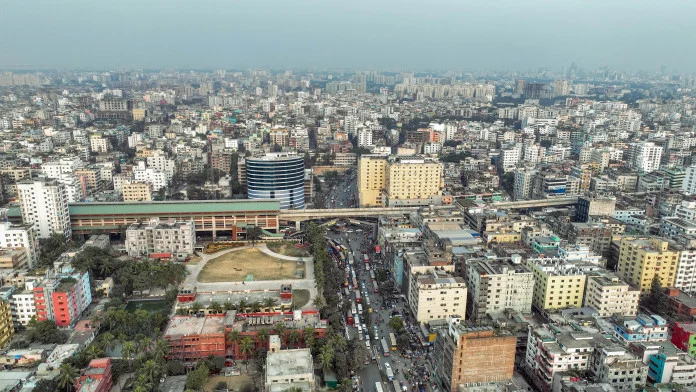
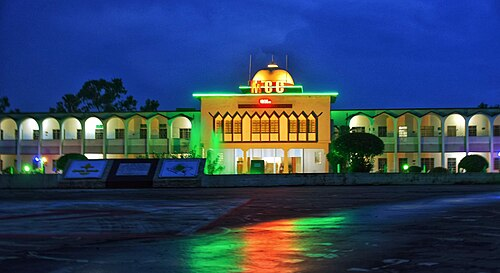
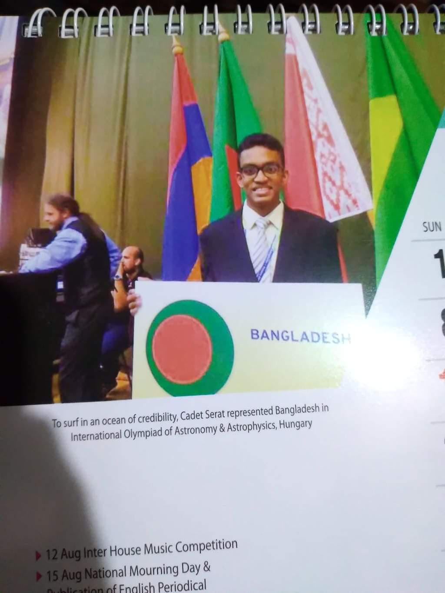
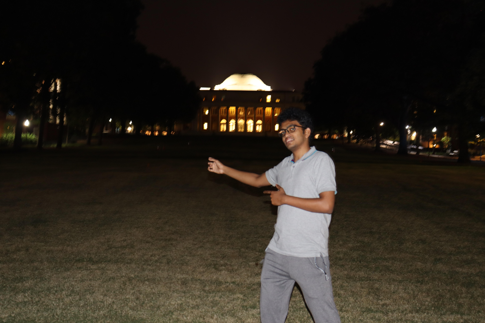
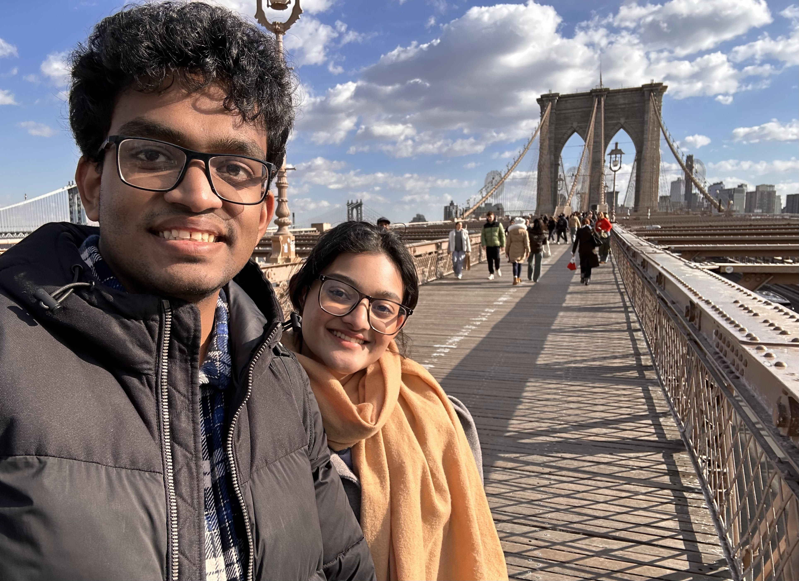
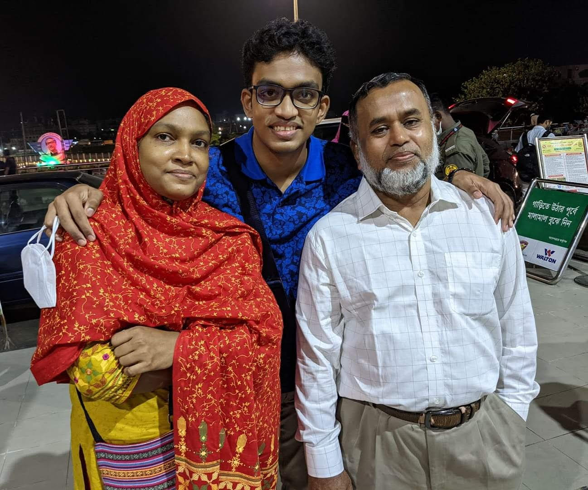

I grew up in Mirpur: a dense, loud, wonderfully chaotic neighborhood in the heart of Dhaka, Bangladesh. If you've never been, imagine a place where ten million people live within a few square kilometers, where the streets never sleep, where the call to prayer mixes with rickshaw bells and street vendors selling jhalmuri at late night. It's about as far from a quiet American suburb as you can get, and I wouldn't trade it for anything.

My parents had a plan for me to join armed forces: clear path, respected career, stable future. So, when I was in grade 7, they sent me to Mirzapur Cadet College, a military boarding school where discipline was the curriculum and the day started before the sun did.
Every morning at 5:30 AM, we ran 4 kilometers before breakfast. I learned to march in formation until my legs went numb and to function on four hours of sleep. The military teaches you that discomfort is temporary and complaining is pointless, a lessons that has always been useful in my life.

But somewhere between the morning runs and the parade drills, I started looking up. Literally. The sky over Mirzapur was darker than anything I'd seen in Dhaka. I started reading about stars, then about galaxies, then about the universe itself. And slowly, quietly, a different plan started forming.
Telling my parents I didn't want to join the military was one of the hardest conversations of my life. They had invested years both emotionally and financially in this path. But I had fallen in love with physics and astronomy, and I couldn't pretend otherwise.
I threw myself into the Astronomy Olympiad. It gave me purpose, mentors, lifelong friends, and eventually the confidence to aim for something bigger.

I applied to universities in the US not knowing what to expect. When the acceptance from Vanderbilt came, it felt unreal. The culture shock was spectacular.
At Vanderbilt I double-majored in Physics and Mathematics, minored in Astronomy and Scientific Computing, and discovered that research is just problem-solving with higher stakes and longer timescales. In my sophomore year at Vanderbilt I met Subha, and this, in the long run, turned out to be the most important discovery I've made.


None of this would have happened without my parents and sisters. My parents bet everything on my education, even when I took that bet in a direction they didn't expect. My sisters have been my earliest and most honest critics (she still is). I carry all of them with me, even when home is 8,000 miles away.

I'm in Columbus, Ohio, doing a Ph.D. in Astronomy at Ohio State. It's a long way from morning runs at cadet college. The 5:30 AM wake-ups are optional now, though. I choose to sleep in.